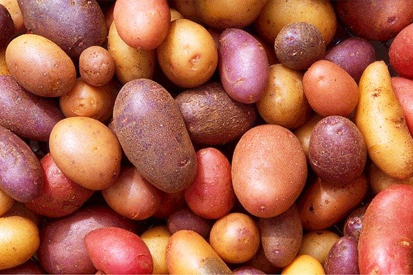
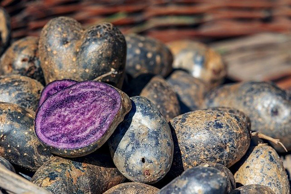
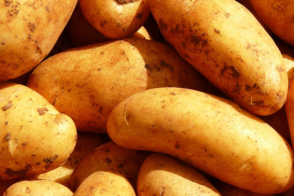
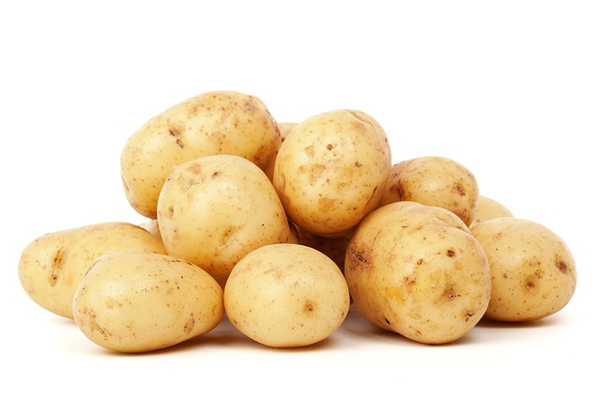
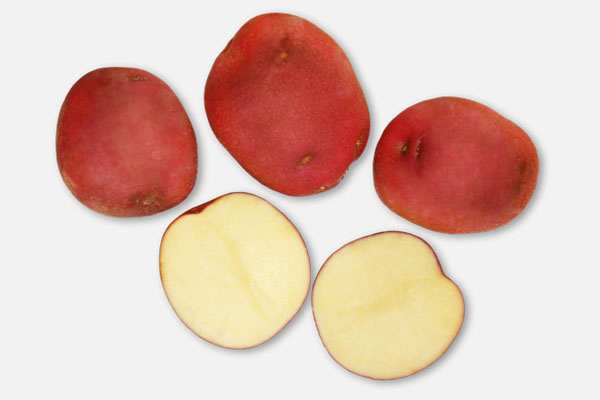

 Kırmızı patates, sarı patates kabuğundan
bir nebze daha kalın kabuğa sahiptir.
Yetiştiği topraklardan dolayı renginin turuncu
ve kırmızı olması açıklanmaktadır.
Tıpkı yaygın tüketilen sarı patates gibi nişasta
içerir. Diğer patateslerden farkı;
ekonomik değerinin biraz daha yüksek olmasıdır.
Tadı hafif bir tatlı aromaya sahiptir.
Bu nedenle tatlı patates ile aromatik bir püre ve
tatlı hazırlanabilir.Glisemik indeksi
çok düşük olan olan kırmızı tatlı patates, dilenen
her şekilde pişirime uygundur.
KIRMIZI PATATES
 Tatlı patatesin uzaktan bir akrabası sayılan mor patates,
sağlığa olan faydaları sayesinde ilaç gibi etkileri olan
bir patates türüdür. Mor patates olur mu diyenler için bu
patatesin renk sırrını açıklayalım. Yetiştiği topraklarda
bulunan mineraller sayesinde mor rengini alan mor patates,
sonderece doğal bir besindir.
MOR PATATES

NAHİTA PATATES
patates tohumundan üretilen yerli patates, Niğde bölgesinde yaygın şekilde üretime geçen bir patates türüdür.Türkiye topraklarından dünya ülkelerine açılmayı hedefleyen Nahita patatesi, üretimi yapıldığında yüksek verim veren bir sebzedir. Kızartma ve yemeklik olarak tüketilmeye uygun olan Nahita patatesini Türkiye’de pek çok noktada temin etme imkanınız bulunuyor. Yerli ve milli bir patates türü olduğu için; ekonomik değeri de oldukça düşük. Niğdepatatesi ilkbahar döneminde ekilen, düşük sıcaklıkta yetişen bir patatestir.

BEYAZ FİANNA

SARI BAMBA
Sarı bamba patates, oval bir görünüme sahiptir. Kabuğunun rengi sarı tonlarını taşıyor. Bazen sarı bazen çok açık sarı bir kabukla büyür. Kızartmalık ve yemeklik patatesler arasında lezzetli bir tür olan bamba patates, besin değeri yüksek bir türdür aynı zamanda. Ekildiğinde çok geç olgunlaşan bamba patates, ülkemizde pazarlama alanı geniş olan bir patates çeşididi
DURABO

Lady rosetta patatesi görenler hayret ediyor. Dışı kırmızı, içi sarı olan
bu patates sürprizlerle dolu. Lady rosetta patatesini kestiğinizde kırmızı
ve sarı bir renk uyumu sizi karşılayacak. Kızartma ve cips yapımı için
kullanılan bu patates çeşidi, orta boy büyüklüğe sahiptir. Parmak patates
kızartmak isteyenler lady rosettayı kabuğuyla beraber kızartıp tabaklarda
renkli bir sunum oluşturabilir.